6 Describing functions
Knowing and correctly using a handful of phrases about functions with a single input goes a long way in being able to communicate with other people . Often, the words make sense in everyday speech (“steep”, “growing”, “decaying”, “goes up”, “goes down”, “flat”).
Sometimes the words are used in everyday speech but the casual person isn’t sure exactly what they mean. For instance, you will often hear the phrase “growing exponentially.” The graph of the exponential function illustrates exactly this sort of growth: flat for small \(x\) and growing steadily steeper and steeper as \(x\) increases.
Still other words are best understood by those who learn calculus. “Concave up,” “concave down”, “approaching 0 asymptotically,” “continuous”, “discontinuous”, “smooth”, “having a minimum at …,” “having a minimum of …”, “approaching \(\infty\) asymptotically,” “having a vertical asymptote.”
The next short sections describe seven simple function-shape concepts: slope, concavity, continuity, monotonicity, periodicity, asymptotes, and local extrema. Each of these concepts has the idea of a function at the core, because each one depends on how the function output changes as the input is changed.
I’ll illustrate these concepts using three pattern-book functions graphed in Figure 6.1.
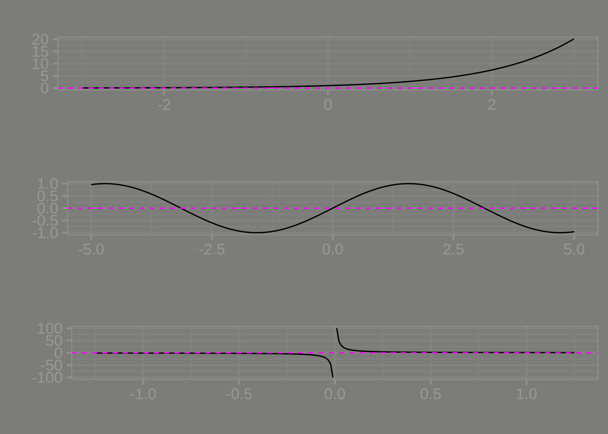
6.1 Slope
The slope describes whether the output goes up or down, and to what extent, as the input changes. Typically, the slope is different for different input values. The only function type that has a slope that is the same for all inputs is the straight-line function.
Figure 6.2 graphs the sinusoid function (black curve). At numerous points in the domain, the function has been overlaid with a straight-line segment that has the same slope as does the function itself. For \(x\) near \(-3\) the slope is negative; for \(x\) near zero the slope is positive, then swings back to negative again for \(x\) near \(3\).
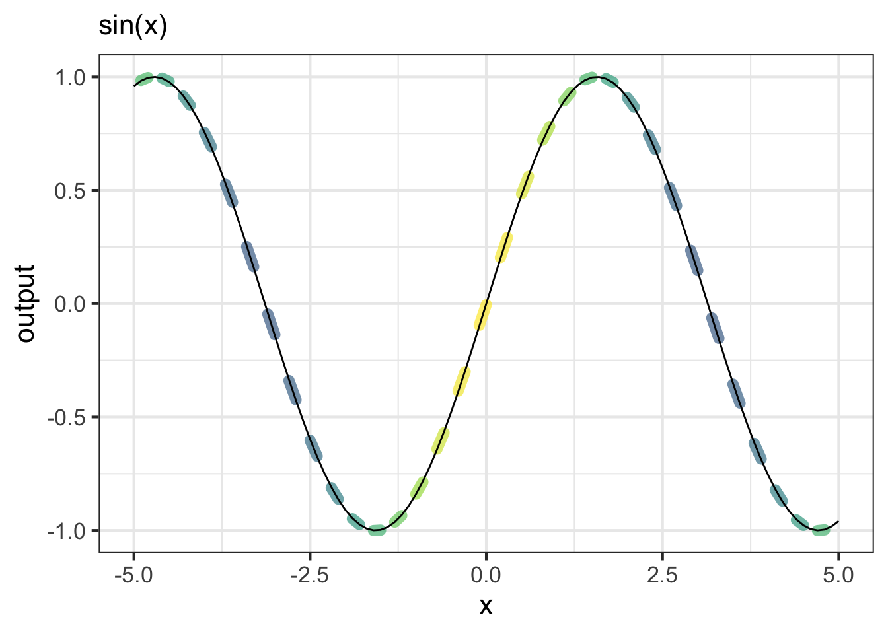
When we speak of the slope of the sinusoid, or any other function, we mean the local slope as a function of the input. The value of the function does not enter into it, just the slope. Figure 6.3 shows only the slope of the sinusoid, without the sinusoid output at all. Each line segment has a horizontal “run” of \(0.1\), so you can measure the slope of each segment—rise over run—as the vertical extent \(\Delta y\) of the segment divided by \(0.1\).
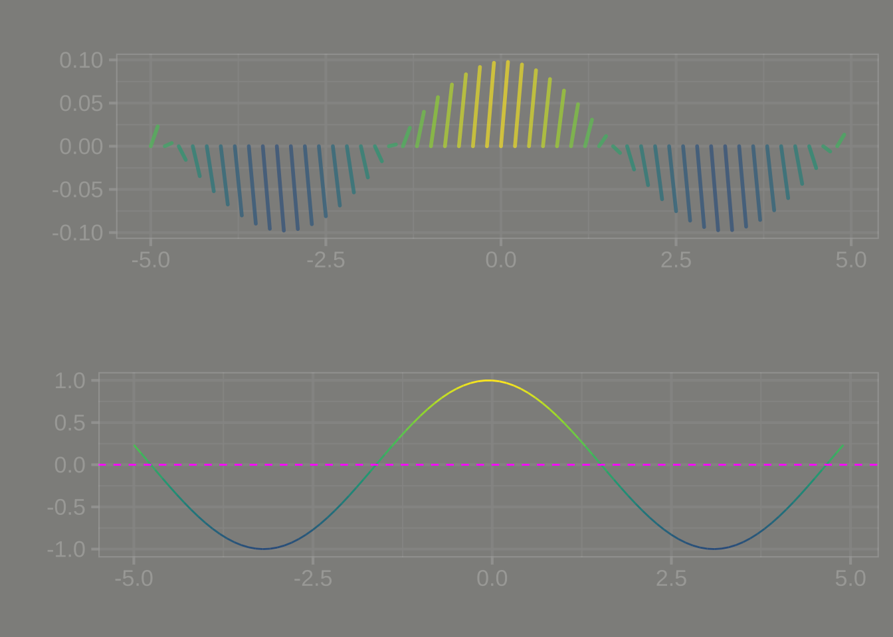
For instance, the \(\Delta y\) for the slope segment at \(x=0\) is 0.1, so the slope at \(x=0\) is \(\Delta y/0.1 = 1\). At \(x=1\), \(\Delta y \approx 0.05\), so the slope is 0.5. The graph colors the segment according to the slope, so large negative slopes are blue, slopes near zero are green, and large positive slopes are yellow.
A more general word than “slope” for describing functions is rate of change. It is absolutely crucial to distinguish between the change in the output value of a function and the rate of change of that output.
To illustrate, suppose we have a function \(f(x) \equiv x^2 + 3\). When we talk about “change” we imagine a situation where we have to different values of the function input, say \(x_1 = 3\) and \(x_2 = 6\).
The “change” in output for these two different inputs is \(f(x_2) - f(x_1)\), or in this case \(39 - 12 = 27\).
In contrast, the “rate of change” is the change in output divided by the change in input, that is:
\[\frac{f(x_2) - f(x_1)}{x_2 - x_1} = \frac{27}{3} = 9\ .\]
A “rate” in mathematics is a ratio: one measure divided by another. For instance, a heart rate is measured as beats-per-minute. To measure it, count the number of pulse waves in a given interval of time. A typical medical practice is to count for 15 seconds, an interval long enough to get a reliable count but short enough not to unduly prolong the process. If 18 pulse waves were counted in the 15 seconds, the heart rate is 18 beats per 15 seconds, more usually reported as 72 beats-per-minute.
In a rate of change, the ratio is the change in output divided by the change of input.
6.2 Concavity
The slope of a function at a given input tells how fast the function output is increasing or decreasing as the input changes slightly. Concavity is not directly about how the function output changes, but about how the function’s slope changes. For instance, a function might be growing slowly in some region of the domain and then gradually shift to larger growth in an adjacent region. Or, a function might be decaying steeply and then gradually shift to a slower decay. Both of these are instances of positive concavity. The opposite pattern of change in slope is called negative concavity. If the slope does not change at all—only straight-line functions are this way— the concavity is zero.
Concavity has a very clear appearance in a function graph. If a function is positive concave in a region, the graph looks like a smile or cup. Negative concavity looks like a frown. Zero concavity is a straight line.
Referring to the three function examples in Figure 6.1, we will use the traditional terms concave up and concave down to refer to positive and negative concavity respectively.
- The exponential is concave up everywhere in its domain.
- The sinusoid alternates back and forth between concave up and concave down.
- This particular power law \(x^{-1}\) is concave up for \(0 < x\) and concave down for \(x < 0\).
When a function switches between positive concavity and negative concavity, as does the sinusoid as well as the gaussian and sigmoid functions, there is an input value where the switch occurs and the function has zero concavity. (Continuous functions that pass from negative to positive or vice versa must always cross zero.) Such in-between points of zero concavity are called inflection points. A function can have zero, one, or many inflection points. For instance, the sinusoid has inflection points at \(x = \ldots, -\pi, 0, \pi, 2\pi, \ldots\), the cubic power function \(f(x)\equiv x^3\) has one, and the exponential has none.
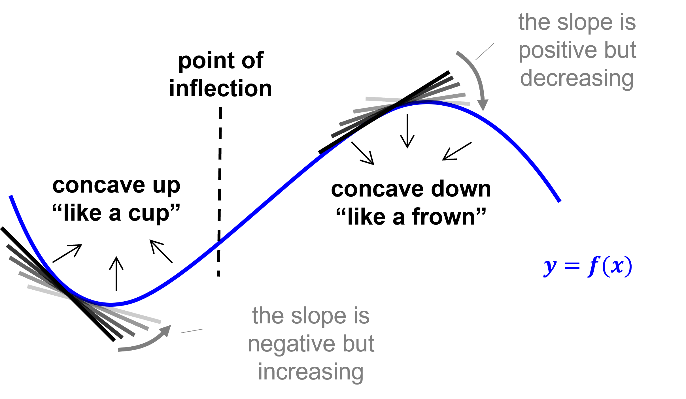
“Inflection point” appears in news stories, so it is important to know what it means in context. The mathematical definition is about the change in the direction of curvature of a graph. In business, however, it generally means something less esoteric, “a time of significant change in a situation” or “a turning point.”1 The business sense effectively means that the function—say profits as a function of time, or unemployment as a function of time—has a non-zero concavity, up or down. It is about the existence of concavity rather than about the change in the sign of concavity.
One of the benefits of learning calculus is to gain a way to think about the previous paragraph that is systematic, so it is always easy to know whether you are talking about the slope of a function or the change in slope of a function.
6.3 Continuity
A function is continuous if you can trace out the graph of the function without lifting pencil from the page. A function is continuous on an interval (a,b) if you can trace the function over that whole interval. All of the pattern-book functions are continuous over any interval in their domain except for power-law functions with negative exponents. (This includes the reciprocal since it is a power-law with a negative exponent: \(1/x = x^{-1}\).) Those exceptions are not defined at \(x=0\).
To illustrate, consider the power-law function graphed in Figure 6.1. On any interval (a,b) that does not include 0, the function is continuous. For inputs \(x < 0\), the function is negative. For inputs \(0 < x\), the function is positive. So, on an interval that includes \(x=0\) the function jumps discontinuously from negative to positive.
6.4 Monotonicity
A function is monotonic on a domain when the sign of the slope never changes on that domain. Monotonic functions either steadily increase in value or, alternatively, steadily decrease in value.
Another way of thinking about monotonicity is to consider the order of inputs and outputs compared to a number line. If a function is monotonically increasing then it will preserve the order of inputs along the number line when it maps inputs to outputs, whereas a monotonically decreasing function will reverse the order. For instance, if the input \(x\) comes before an input \(y\) (i.e., \(x<y\)), then \(f(x)<f(y)\) for monotonically increasing functions (the order is preserved), but \(f(y)<f(x)\) for monotonically decreasing functions (the order of outputs is reversed).
Of the pattern-book functions in Figure 6.1: both the exponential and the logarithm function are monotonic: the exponential grows monotonically as does the logarithm. The sinusoid is not monotonic over any domain longer than half a cycle: the function switchs between positive slope and negative slope in different parts of the cycle.
6.5 Periodicity
A phenomenon is periodic if it repeats a pattern over and over again. The pattern that is repeated is called a cycle; the periodic function as a whole is one cycle placed next to the previous one and so forth. The day-night cycle is an example of a periodic phenomenon, as is the march of the seasons. The period is the duration of one complete cycle; the period of the day-night cycle is 24 hours, the period of the seasonal progression is 1 year.
Real-world periodic phenomena often show some slight variation from one cycle to the next. Of the pattern-book functions, only the sinusoid is periodic. And it is exactly periodic, repeating the same cycle over and over again. The period—that is, the length of an input interval that contains exactly one cycle—has a value of \(2\pi\) for the pattern-book sinusoid. When used to model a periodic phenomenon, the model function needs to be tailored to match the period of the phenomena.
The idea of representing with sinusoids phenomena that are almost but not exactly periodic, for instance a communications signal or a vibration, is fundamental to many areas of physics and engineering.
6.6 Asymptotic behavior
Asymptotic refers to two possible situations depending on whether the input or output is being considered:
- When the input to a function gets bigger and bigger in size, going to \(\infty\) or \(-\infty\). If, as the input changes in this way the output gets closer and closer to a specific value, the function is said to have a horizontal asymptote of that value.
An example in Figure 6.1 is the exponential function. As \(x \rightarrow -\infty\), that is, as \(x\) goes more and more to the left of the domain, the output tends asymptotically to zero.
- When the output of a function gets bigger and bigger in size, going to \(\infty\) or \(-\infty\) without the input doing likewise. The visual appearance on a graph is like a sky-rocket: the output changes tremendously fast even though the input changes only a little. The vertical line that the skyrocket approaches is called a vertical asymptote. The power-law function \(x^{-1}\) has a vertical asymptote at \(x=0\). If you were to consider inputs closer and closer to \(x=0\), the outputs would grow larger and larger is magnitude, tending toward \(\infty\) or \(-\infty\).
Several of the pattern-book functions have horizontal or vertical asymptotes or both. For instance, the function \(x^{-1}\) has a horizontal asymptote of zero for both \(x \rightarrow \infty\) and \(x \rightarrow -\infty\).
The sinusoid has neither a vertical nor a horizontal asymptote. As input \(x\) increases either to \(-\infty\) or \(\infty\), the output of the sinusoid continues to oscillate, never settling down to a single value. And, of course, the output of the sinusoid is everywhere \(-1 \leq \sin(x) \leq 1\), so there is no possibility for a vertical asymptote.
6.7 Locally extreme points
Many continous functions have a region of the input domain where the output is gradually growing, then reaches a peak, then gradually diminishes. This peak is called a local maximum. “Maximum” because the output reaches a peak at a particular input, “local” because in the neighborhood of the peak the function output is smaller than at the peak.
Likewise, functions can have a local minimum: the bottom of a bowl rather than the top of a peak.
Of the three pattern-book functions in Figure 6.1, only the sinusoid has a local maximum, and, being periodic, it repeats that every cycle. The sinusoid similarly has a local minimum in every cycle..
Many modeling applications involve finding an input where the function output is maximized. Such an input is called an argmax. “Argument” is a synonym for “input” in mathematical and computer functions, so “argmax” refers to the input at which the function reaches a maximum output. For instance, businesses attempt to set prices to maximize profit. At too low a price, sales are good but income is low. At too high a price, sales are too low to bring in much income. There is a sweet spot in the middle.
Other modeling applications involve finding an argmin, the input for which the output is minimized. For instance, aircraft have a speed at which fuel consumption is at a minimum for the distance travelled. All other things being equal, it is best to operate at this speed.
The process of finding an argmin or an argmax is called optimization. And since maxima and minima are very much the same mathematically, collectively they are called extrema.
Any function that has an extremum cannot possibly be monotonic, since the growth is positive on one side of the extremum and negative on the other side.
6.8 Drill
Drill 1 What is the value of \(f(4)\) when \(f(x) \equiv 2 x + 1\ ?\)
-2 -4 2 4 9
Drill 2 What is the change in the value of \(f()\) when the input goes from 2 to 4?
Assume \(f(x) \equiv 2 x + 1\)
-4 -2 2 4 9
Drill 3 What is the rate of change in the value of \(f()\) when the input goes from 2 to 4?
Assume \(f(x) \equiv 2 x + 1\)
-2 -4 2 4 9
Drill 4 What is the change in the value of \(f()\) when the input goes from 4 to 2?
Assume \(f(x) \equiv 2 x + 1\)
-2 -4 2 4 9
Drill 5 What is the rate of change in the value of \(f()\) when the input goes from 4 to 2?
Assume \(f(x) \equiv 2 x + 1\)
-2 -4 2 4 9
Drill 6 What is the rate of change of the function \(f(x) \equiv 3 x - 2\) when the input is 4?
-2 0.3 2 3 10
Drill 7 What is the change in value of the function \(f(x) \equiv 3 x - 2\) as the input goes from 3 to 3.1?
-2 0.3 2 3 10
Drill 8 What is the rate of change in value of the function \[f(x) \equiv 3 x - 2\] as the input goes from 3 to 3.1?
-2 0.3 2 3 10
Drill 9 What is the period of the \(\sin()\) function?
1 \(2/\pi\) \(\pi/2\) \(\pi\) \(2 \pi\)
Drill 10 Which of these words is most appropriate to describe the function \(g(x) \equiv 2 - 3 x + 4x^3 ?\)
Power-law Discontinuous Polynomial Periodic
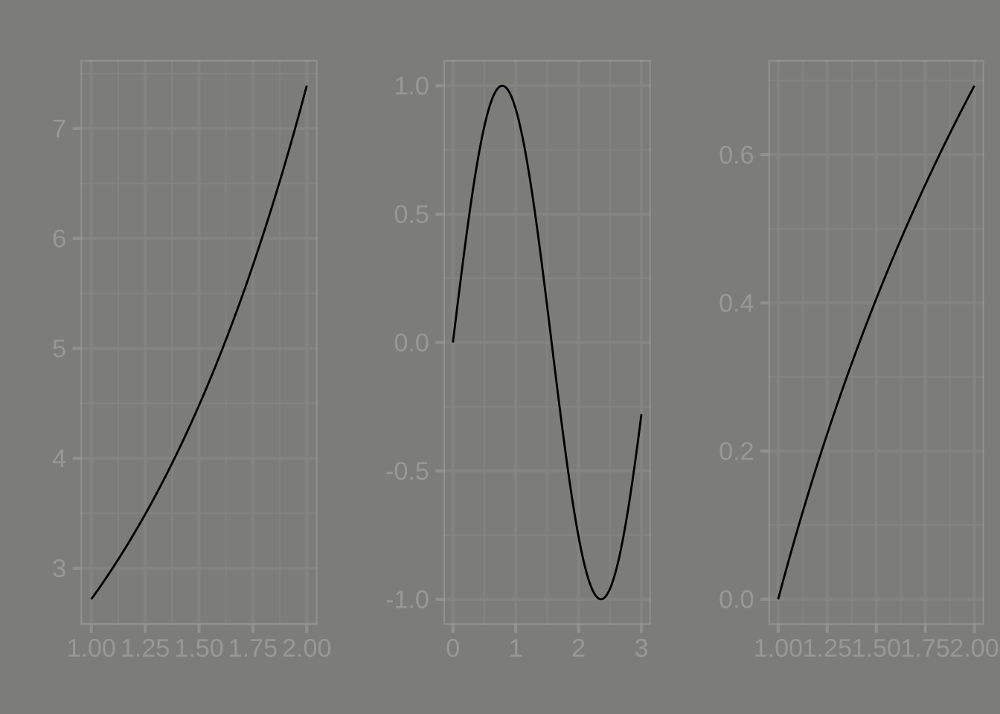
Drill 11 Which of the functions in Figure 6.4 is concave up over the domain shown in the graph?
B A C
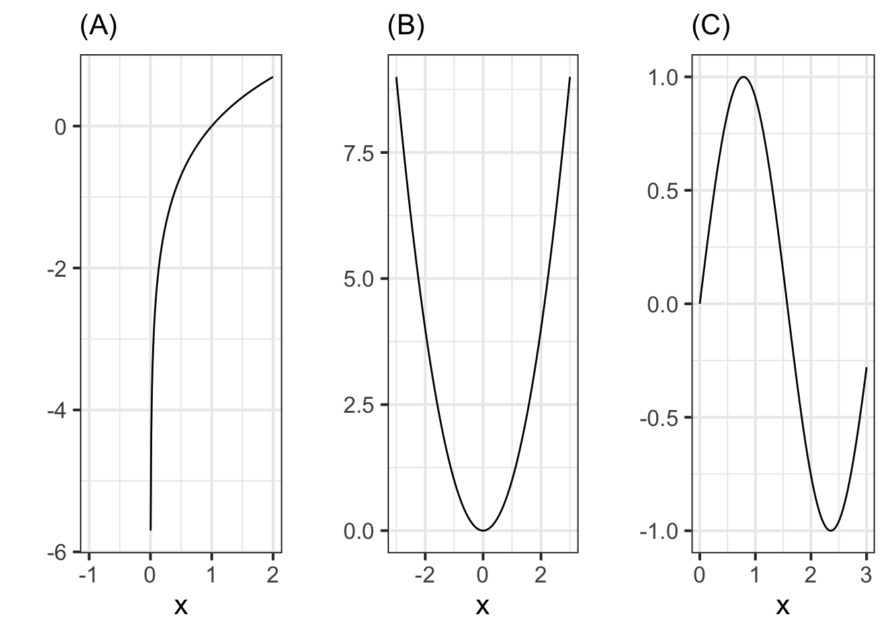
Drill 12 Which of these functions in Figure 6.5 has a vertical asymptote?
B A C
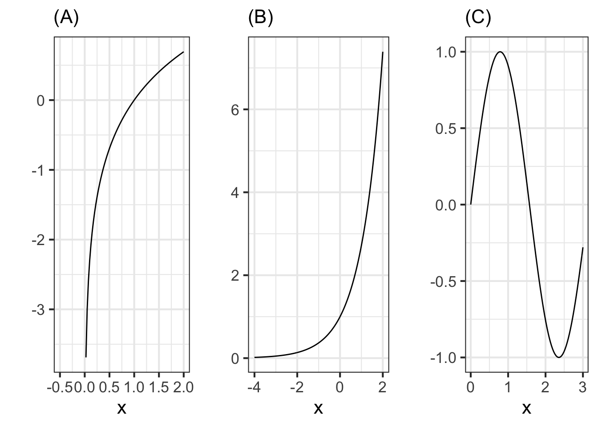
Drill 13 Which of the functions in Figure 6.6 has a vertical asymptote?
B A C
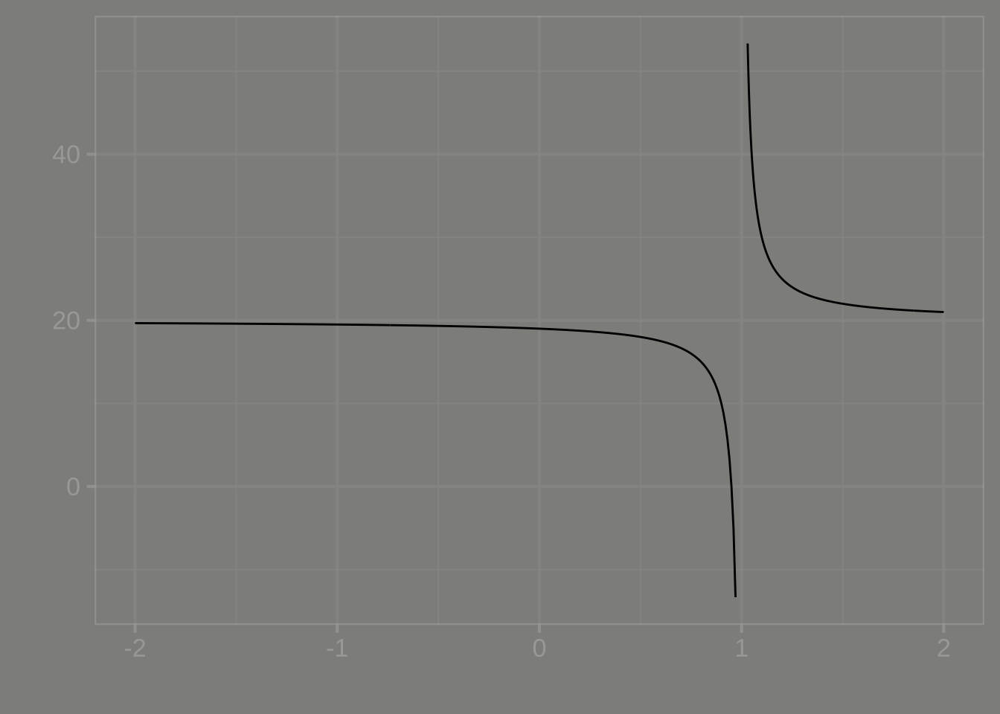
Drill 14 For the function in Figure 6.7, where is the vertical asymptote located?
- At \(x=0\)
- At \(x=1\)
- At 20 as \(x \rightarrow \pm\infty\)
Drill 15 For the function in Figure 6.7, where is the horizontal asymptote located?
- At \(x=0\)
- At \(x=1\)
- At 20 as \(x \rightarrow \pm\infty\)
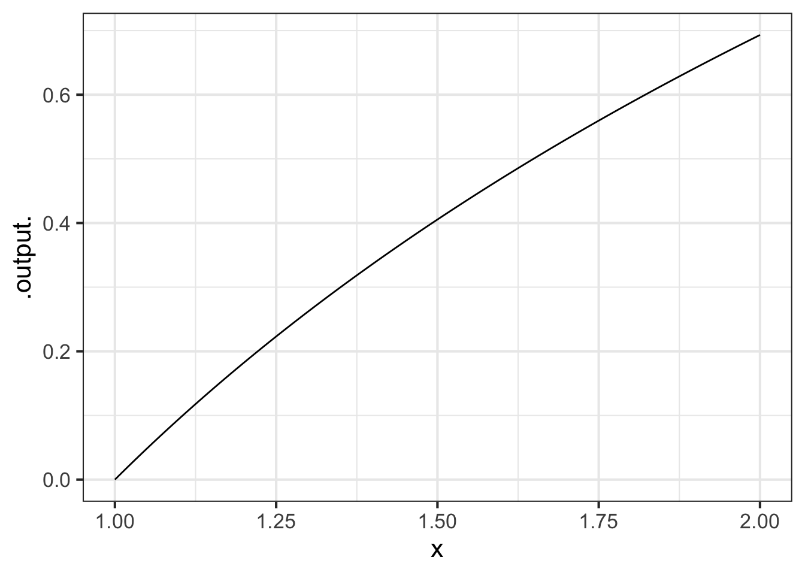
Drill 16 Does the function in Figure 6.8 have an inflection point?
yes no cannot tell
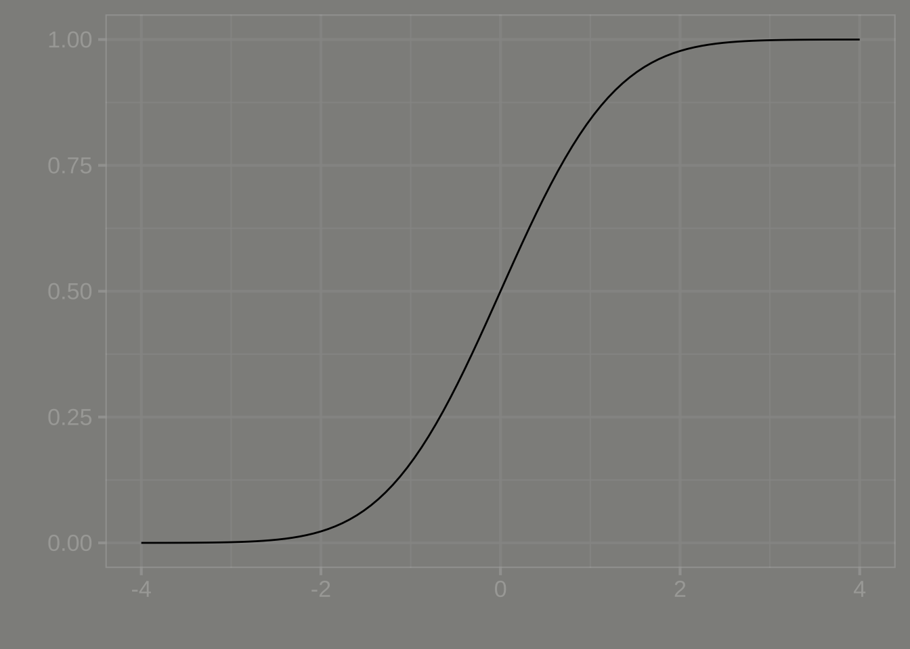
Drill 17 Does the function in Figure 6.9 have an inflection point?
yes no cannot tell
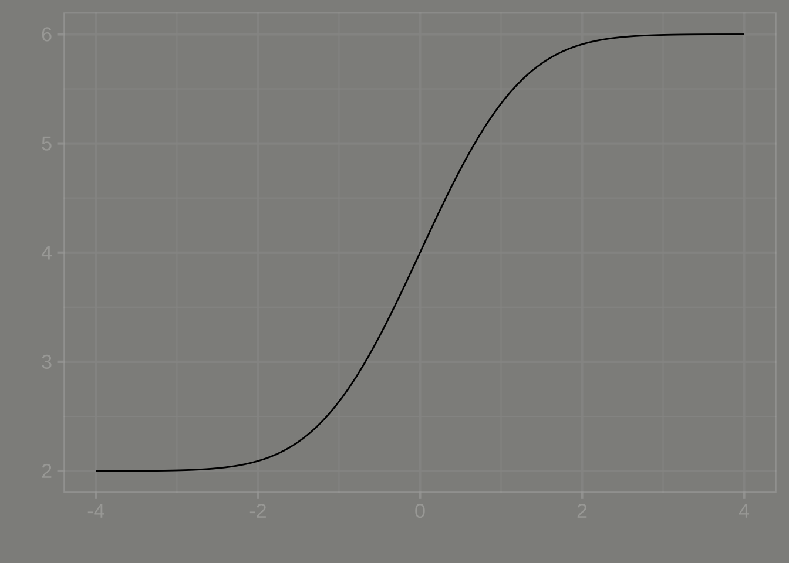
Drill 18 Which of these is a correct description of a horizontal asymptote in the function in Figure 6.10?
- There is no horizontal asymptote.
- At 2 as \(x \rightarrow -\infty\)
- At 2 as \(x \rightarrow \pm\infty\)
- At 6 as \(x \rightarrow -\infty\)
Drill 19 Which of these is a correct description of a horizontal asymptote in the function in Figure 6.10?
- There is no horizontal asymptote.
- At 2 as \(x \rightarrow \infty\)
- At 2 as \(x \rightarrow \pm\infty\)
- At 6 as \(x \rightarrow \infty\)
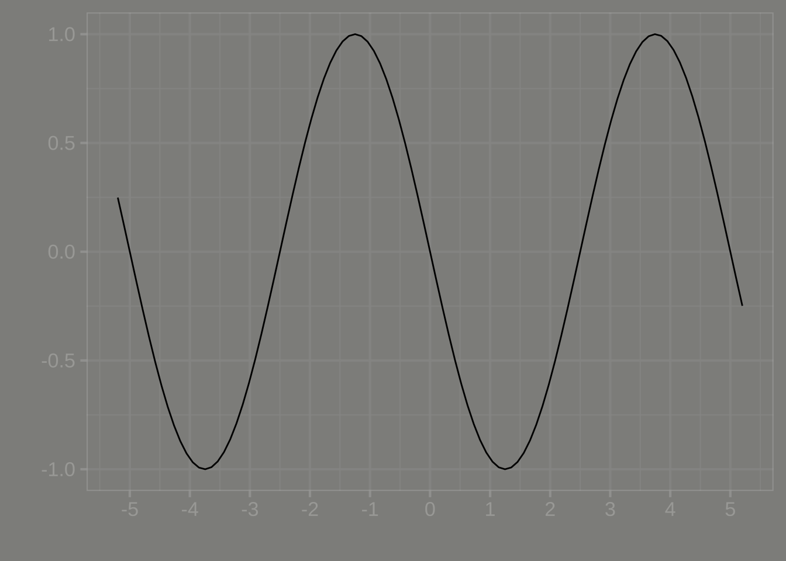
Drill 20 Which of these is the max of the function in Figure 11.9?
0 1 2 3 4
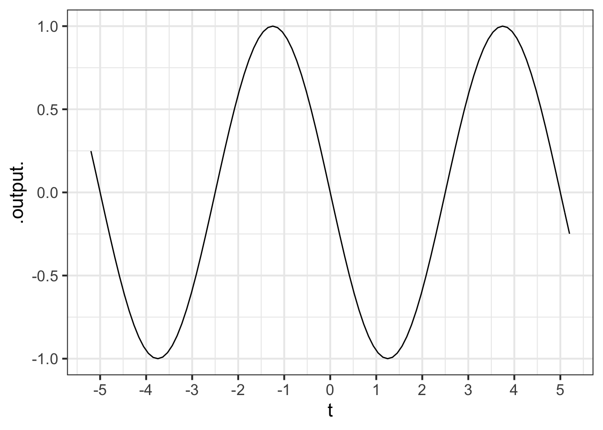
Drill 21 Which of these is an argmin of the function in Figure 6.12?
\(t = -2.5\) \(t = -1.25\) \(t = 0\) \(t = 1.25\) \(t = 2.5\)
Drill 22 Which of these is an argmax of the function in Figure 6.12?
\(t = -2.5\) \(t = -1.25\) \(t = 0\) \(t = 1.25\) \(t = 2.5\)
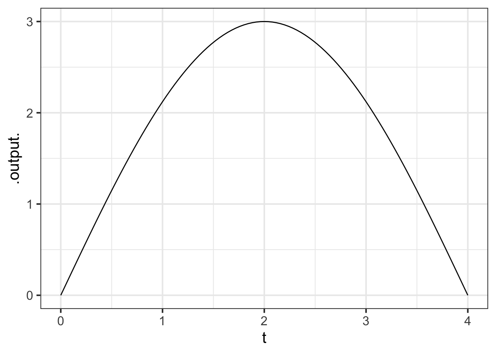
Drill 23 According to Figure 6.13, which of these values is the argmax of the function?
0 1 2 3
Drill 24 According to Figure 6.13, which of these values is the maximum of the function?
0 1 2 3
Drill 25 For the function in Figure 6.13, which of these properties does not apply?
no inflection point monotonic continuous concave-down
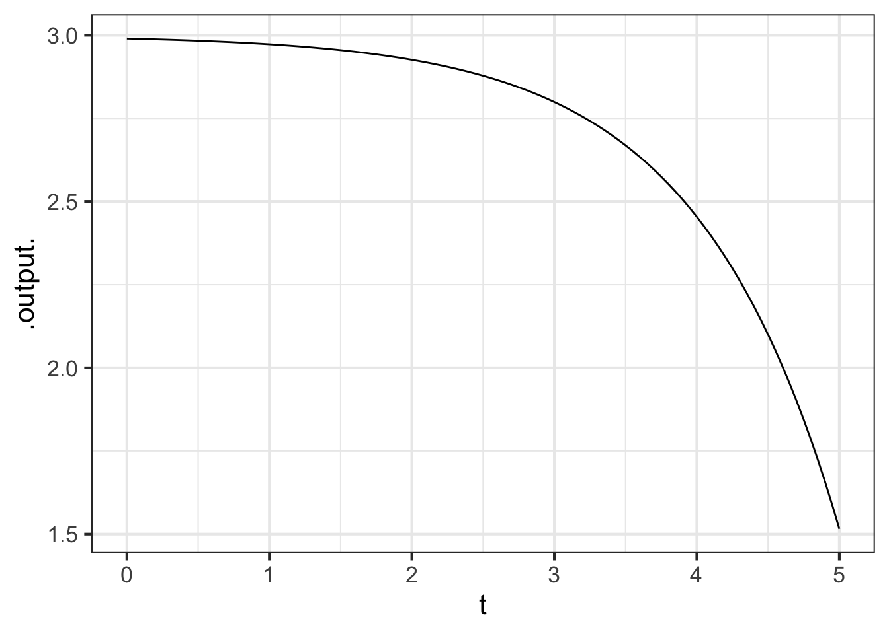
Drill 26 For the function in Figure 6.14, which of these properties does not apply?
no inflection point monotonic discontinuous concave-down
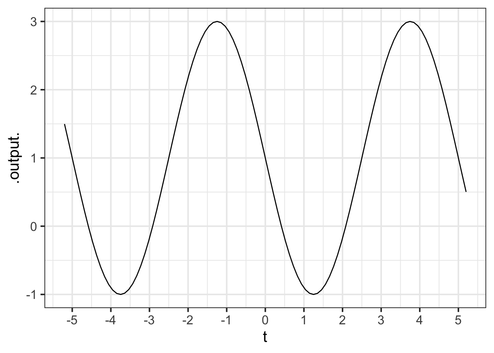
Drill 27 What’s the period of the sinusoid in Figure 6.15?
1 2 3 4 5
Drill 28 Which of these pattern-book functions has a discontinuity?
\(\sin(x)\) \(g(x) \equiv - x^1\) \(g(x) \equiv x^{-1}\) \(\text{dnorm}(x)\)
6.9 Exercises
Exercise 6.01
Answer these questions. You may want to refer to the graphs in ?fig-monomial-graphs through Figure 5.23.
Choose from among these possibilities:
- Flat: not-concave
- Down: concave down on the whole domain
- Up: concave up on the whole domain
- DU: concave down on the left and up on the right
- UD: concave up on the left and down on the right
- UDU: concave down in the center and concave up on both flanks
Part A Which of these best describes the concavity of the gaussian function?
Flat Down Up UDU DU UD
Part B Which of these best describes the concavity of the sigmoid function?
Flat Down Up UDU DU UD
Part C Which of these best describes the concavity of the second-order monomial \(m_2(x) \equiv x^2\)?
Flat Down Up UDU DU UD
Exercise 6.02
We’re going to look at the pattern-book functions in terms of three properties
- Slope: whether the graph has a slope that is consistently positive, negative, both, or neither, and
- Concavity: whether the function being graphed is concave up, concave down, neither, or both (i.e., concave up in some regions of the domain and down for others).
- Horizontal asymptote: whether the function becomes approximately constant as the input goes to either plus or negative infinity.
As a reminder, here’s a command to plot a function over the graphics domain \(-3 \leq x \leq 3\):
slice_plot(exp(x) ~ x, domain(x=-3:3))
Fill in the following table based on the graphs you make of the pattern-book functions. We have already shown answers for the exponential and sinusoid
| function name | R formula | slope | concavity | horiz. asymptote |
|---|---|---|---|---|
| exponential | exp(x) |
positive | concave up | \(x \rightarrow -\infty\) |
| logarithm | ||||
| sinusoid | sin(x) |
both | both | neither |
| square | ||||
| proportional | ||||
| constant | ||||
| reciprocal | ||||
| gaussian | ||||
| sigmoid |
Google dictionary, provided by Oxford Languages↩︎